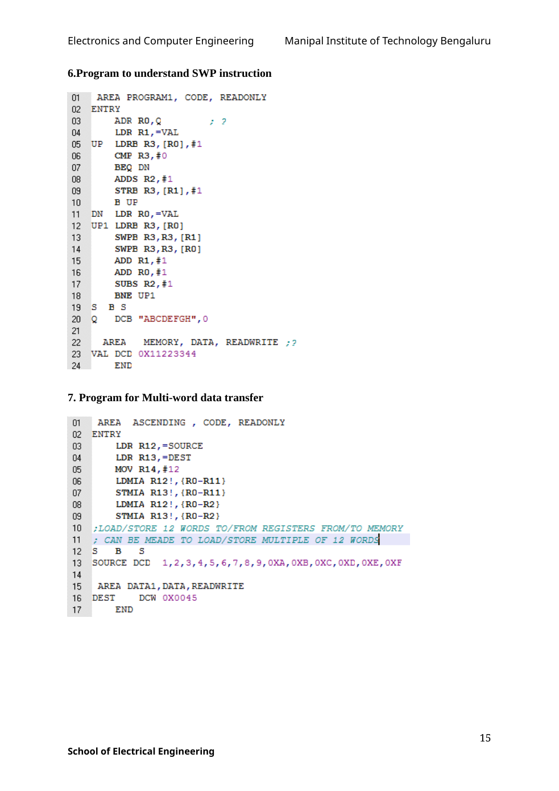

Copyable text transcription
OCR-generated from the original manual page. Check register names, labels, constants and punctuation against the reference image before using.
Electronics and Computer Engineering Manipal Institute of Technology Bengaluru
6.Program to understand SWP instruction
01 AREA PROGRAM1, CODE, READONLY
02 ENTRY
03 ADR RO,Q 2?
04 LDR R1,=VAL
05 UP LDRB R3, [RO],#1
06 CMP R3, #0
07 BEQ DN
08 ADDS R2,#1
03 STRB R3, [R1], #1
10 B UP
11 DN LDR RO,=VAL
12 UP1 LDRB R3, [RO]
13 SWPB R3,R3, [R1]
14 SWPB R3,R3, [RO]
15 ADD R1, #1
16 ADD RO, #1
V7 SUBS R2, #1
18 BNE UP1
19 S BS
20 Q DCB "ABCDEFGH",0
21
22 AREA MEMORY, DATA, READWRITE ;?
23 VAL DCD 0X11223344
24 END
7. Program for Multi-word data transfer
01 AREA ASCENDING , CODE, READONLY
02 ENTRY
03 LDR R12,=SOURCE
04 LDR R13,=DEST
05 MOV R14, #12
06 LDMIA R12!, {RO-R11}
07 STMIA R13!, {RO-R11}
08 LDMIA R12!, {RO-R2}
03 STMIA R13!, {RO-R2}
10 ;LOAD/STORE 12 WORDS TO/FROM REGISTERS FROM/TO MEMORY
11 ; CAN BE MEADE TO LOAD/STORE MULTIPLE OF 12 WORDG
12S B §
13. SOURCE DCD 1,2,3,4,5,6,7,8,9,0XA, OXB, OXC, OXD, OXE, OXF
14
15 AREA DATA1, DATA, READWRITE
16 DEST DCW OX0045
7 END
15
School of Electrical EngineeringView original manual page (reference)
